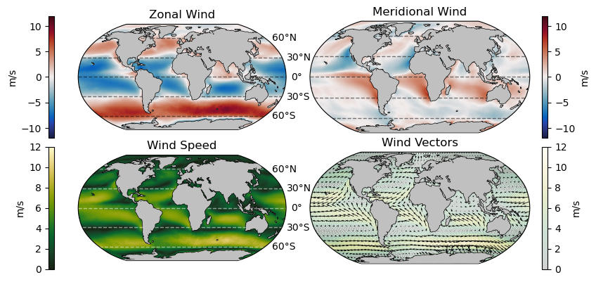
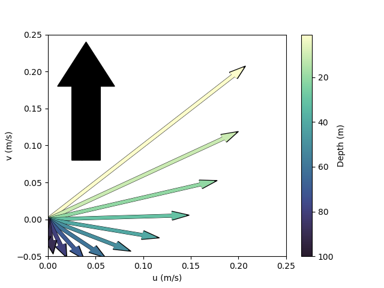
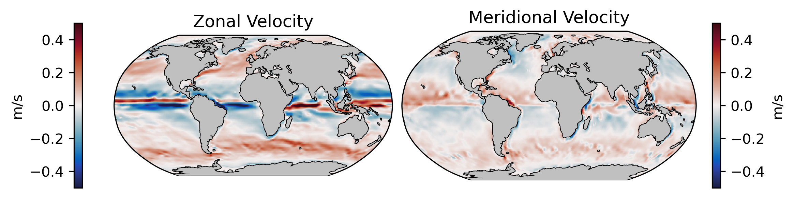

Wind-Driven Circulation#
A large part of the upper-ocean circulation is driven by wind blowing across the ocean surface. This page provides a brief overview of atmospheric circulation and it’s role in setting up circulation at the ocean surface.
Synoptic-scale Atmospheric Circulation#
The following plots show the annual mean wind speed components at 10 m above the ocean surface from the ERA5 climate model:
As we can see from the plot above, surface winds fall into three primary cells in each hemisphere. Between 0\(^{\circ}\) and 30\(^{\circ}\) winds tend to flow in the westward direction with a strong equator-ward component on the eastern side of each ocean basin. Between 30\(^{\circ}\) and 60\(^{\circ}\), this pattern is reversed: winds tend to flow in the eastward driection with a pole-ward flow observed on the western side of the ocean basins. Finally, poleward of 60\(^{\circ}\), winds tend to be more spatially variable. These mean flow patterns form the surface components of the Hadley, Ferrel, and Polar circulation cells, respectively.
Further information on the 3-cell global atmospheric circulation patterns is available in a variety of resources including an overview on NOAA’s website.
The Coriolis “Force”#
Another observation that can be gleaned from the above wind plots is that in the northern hemisphere, equatorward flow is directed to the west and polarward flow is directed to the east. Put another way, the flow is directed to the right of its meridional flow.
The situtation is opposite in the southern hemispehre - the meridional flow is deflected to the left.
This effect, known as the Coriolis Force, is the apparent deflection of moving objects on the surface of a rotating body. It is describe as a “force” in that it exerts an apparent acceleration on moving objects although it is not an actual force. For this reason, it some sometimes referred to as the Coriolis effect.
The magnitude of the Coriolis force can be expressed as the Coriolis parameter \(f\) in terms of the angular rotational speed (\(\Omega\)) of Earth and the latitude (\(\theta\)), i.e.
where \(\Omega = 7.29 \times 10^{-5}\) s\(^{-1}\).
Wind Stress on the Ocean Surface#
As wind blows arcross the ocean surface, friction between the air and ocean generates a shear on the ocean surface called wind stress. Wind stress is found to be roughly propotional to the wind speed (\(\vec{U}\)) relative to the ocean surface (\(\vec{U}_0\)), as
where \(\rho_a\) is the density of the atmosphere, \(C_D\) is a drag coefficient, and \(\Delta \vec{U} = \vec{U} - \vec{U}_0\) is the relative wind speed vector. This “bulk formula”, described in equation 3a of Large and Yeager [2009] is often used in ocean models, such as MITgcm, to parameterize the effect of wind on the ocean surface. Since wind stress modifies the momentum at the ocean surface, it is often described as a “momentum flux”.
Ekman Transport#
Much like the atmosphere, the currents induced by wind stress on the ocean surface are subject to the Coriolis force, meaning they are deflected to the right (left) in the northern (southern) hemisphere. To examine the effect of winds on the surface of the ocean, we can first consider a northward-oriented windstress. Other cases will be similar but the math is tidier in the northward case.
From the assumptions that the ocean is in steady state and the ocean homogeneous, the Momentum Equations, simplify to the equations
With the boundary condition of a northward windstress (\(\vec{\tau} = \tau_y\)), the solution to these equations is
where \(z\) is the depth and
Here, \(\tau_{y}\) is the northward wind stress, \(\rho_w\) is the density of sea water, \(f\) is the Coriolis parameter, and \(A_z\) is the vertical eddy viscosity (friction).
This structure, termed the “Ekman spiral” can be visualized with vectors in a top-down view as follows:
In the image above, the thick black arrow denotes the wind direction and the thin arrows depict the magnitude of the current velocity at various depths below the wind. The magnitude here was estimated for a wind speed of 20 m/s.
The Ekman spiral equations were derived by Ekman [1905] by assuming that over large horizontal spatial scales and in steady state, the dominant terms in the momentum equation near the ocean surface are the Coriolis force and friction.
The periodic solutions above can be substituted into this set of partial differential equations to see that they are indeed a solution. These equations are reproduced from Chapter 9 of Stewart [2008] where further information can be found regarding the history and details of the derivation.
There are many implications of these observations but for the purposes of the surface ocean where \(z=0\), we can see that
In other words, the surface ocean currents flow at an angle 45\(^{\circ}\) relative to the wind stress direction. This observation is critical in assessing the surface ocean flow relative to that of the atmosphere. It is shown here for a northward wind stress and depicted in the northern hemisphere, but the results are generalizable to other wind directions and the southern hemisphere.
Synoptic-Scale Ocean Circulation#
The above components - atmospheric circulation at the ocean surface, the Coriolis effect, and the resulting Ekman transport - lead to the large-scale circulation patterns in the ocean surface. Below is a plot of the mean surface velocity from the ECCO Version 4 State Estimate:
What we see is a rotational circulation pattern in each of the major oceans: the North and South Pacific, the North and South Atlantic, and the Indian Ocean. In other words, in the zonal direction, we see westward flow near the equator and eastward flow aroudnd 45\(^{\circ}\); in the meridional direction south of 45\(^{\circ}\), we see strong poleward flow in the western boundaries and weak equatorward flow in eastern boundatries. These circulation patterns make up the branches of the ocean gyres.